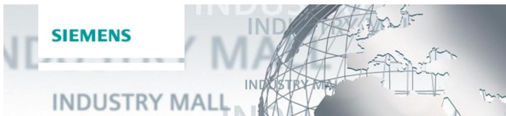

7 附录¶
7.1 服务与支持¶
行业在线支持¶
您有任何问题或需要帮助吗？
西门子工业在线支持服务让您能够全天候获取我们所有的服务与支持专业知识及服务组合。
“行业在线支持”是获取有关我们产品、解决方案和服务信息的中心平台。
产品信息、手册、下载内容、常见问题、应用示例和视频——只需点击几下鼠标，即可获取所有信息：
技术支持¶
西门子工业的技术支持团队针对您所有技术咨询提供快速、专业的支持，并提供多种量身定制的服务方案——从基础支持到个性化支持合同，一应俱全。请通过在线表单向技术支持团队提交咨询：
SITRAIN – 数字工业学院¶
我们通过面向行业的全球培训课程为您提供支持，这些课程融合了实践经验、创新的学习方法，并采用针对客户具体需求量身定制的方案。
有关我们提供的培训和课程的更多信息，以及培训地点和日期，请参阅我们的网页：
服务项目¶
我们的服务范围包括以下内容：
• 工厂数据服务
• 备件服务
• 维修服务
• 现场服务和维护服务
• 改造与现代化服务
• 服务项目与合同
您可以在服务目录网页上查看我们各项服务的详细信息：
“Industry Online Support” 应用程序¶
无论您身在何处，通过“西门子工业在线支持”应用，您都将获得最佳支持。该应用支持 iOS 和 Android 系统：
7.2 产业商城¶
西门子

西门子工业商城是一个可访问西门子工业全系列产品的平台。从产品选择到下单及配送跟踪，工业商城支持全程采购流程——直接且不受时间和地点限制：mall.industry.siemens.com
7.3 相关链接与参考文献¶
表7-1
| 编号 | 主题 |
| \1\ | 西门子工业在线支持https://support.industry。siemens.com |
| \2\ | 应用示例文章页面的链接https://support.industry.siemens.com/cs/ww/en/view/108716692 |
| \3\ | 支持请求http://www.siemens.com/automation/support-request |
| \4\ | 您的 TIA Portal Openness 应用程序为何无法按预期运行？http://support.industry.siemens.com/cs/ww/en/view/109251656 |
| \5\ | 使用 TIA Portal Openness 应用程序时，为什么会出现错误信息“无法连接到 TIA Portal”的错误消息？http://support.industry.siemens.com/cs/ww/en/view/109038214 |
| \6\ | 系统手册https://support.industry。siemens.com/cs/ww/en/view/109477163 |
7.4 变更文档¶
| 版本 | 日期 | 变更 |
| V1.0 | 2015年2月 | 首个版本 |
| V1.0 | 2015年9月 | 修正了轻微错误 |
| V1.1 | 2016年12月 | 适用于 TIA Portal V14 的版本 |
| V1.2 | 2017年5月 | 适用于 TIA Portal V14 SP1 的版本 |
| V1.3 | 2018年2月 | 适用于 TIA Portal V15 的版本 |
| V1.4 | 2019年5月 | 适用于 TIA Portal V15.1 的版本 |
| V1.5 | 2023年3月 | 适用于 TIA Portal V17 的版本 |